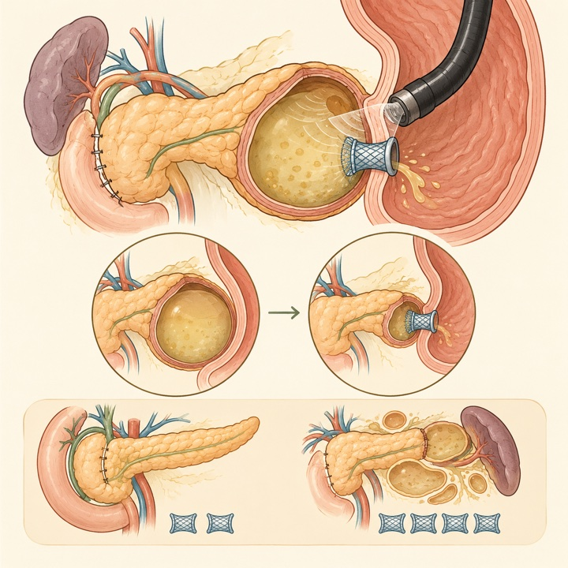
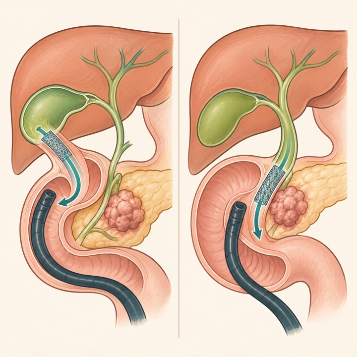
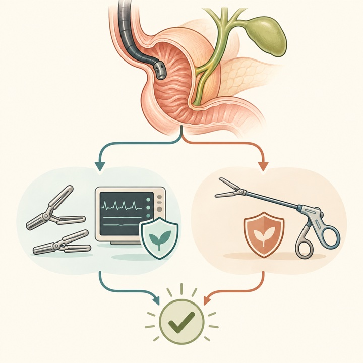
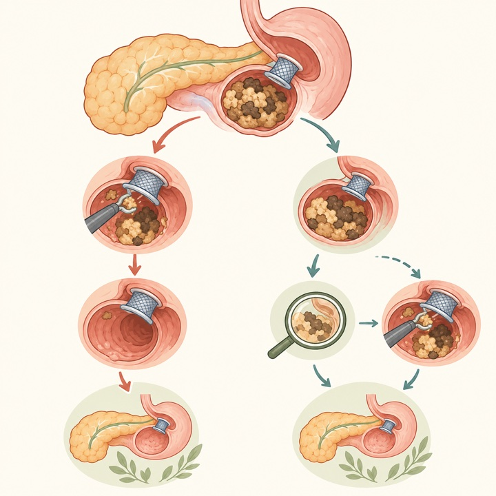
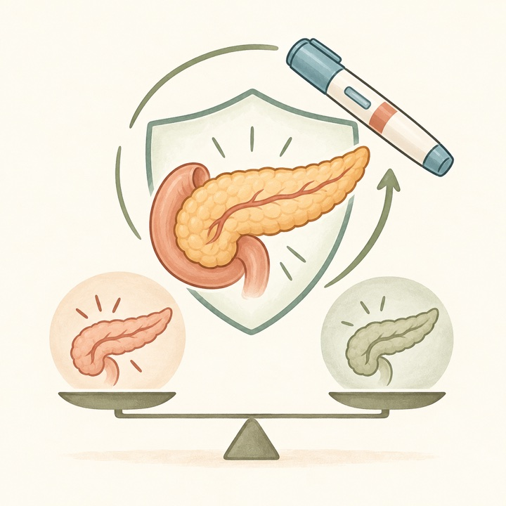
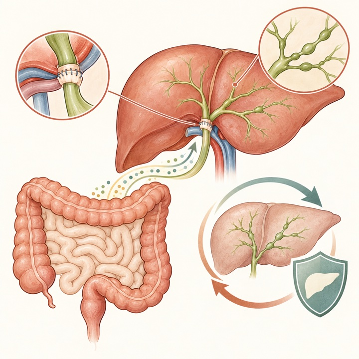
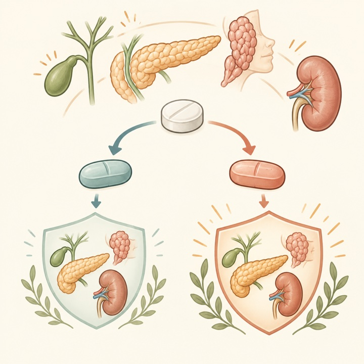
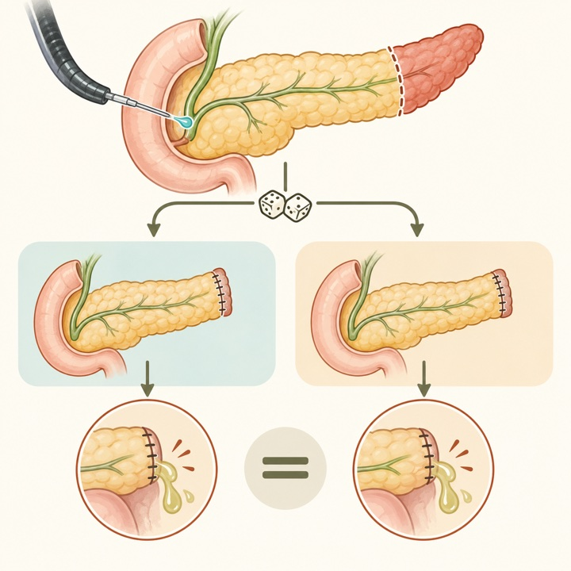

術後膵液貯留：EUSドレナージで73%が臨床的成功
Endoscopy / Q1Multicenter cohort / 265
単回手技で60%、追加内視鏡を含め73%が解決。遠位膵切除後は再介入が多く、治療経路が複雑でした。
Tokai University Pancreatobiliary Group
This Week's Pancreatobiliary Research Highlights
臨床的重要性、研究デザイン、診療への応用可能性を基準に4報を選定しました。IFとJCR quartileは2025年値（2026年公表、判明した最良カテゴリ）を使用し、確実に判定できない場合はQ4としています。
単回手技で60%、追加内視鏡を含め73%が解決。遠位膵切除後は再介入が多く、治療経路が複雑でした。
即時介入はネクロセクトミー実施率を高めましたが、臨床成功、安全性、入院期間、費用に明確な利益を示しませんでした。
遠位膵切除前の内視鏡的BTX注入は安全・実施可能でしたが、臨床的膵液瘻を減らさず、無益性で早期終了しました。
再発率19.6%。IBD併存は再発リスク上昇と関連し、再発PSCはグラフト生存低下と再移植増加に結びつきました。
日本語: 膵切除後膵液貯留に対するEUSガイド下ドレナージ265例を解析しました。臨床的成功は73%（194例）、単回手技のみでの成功は60%、経皮・外科step-upは7.6%でした。遠位膵切除後は膵頭十二指腸切除後より再介入が多く（32%対20%）、臨床的成功の調整オッズも低下しました（OR 0.53）。専門施設の後ろ向き研究であり、stent選択や介入時期の比較には残余交絡が残ります。
English: EUS-guided drainage achieved clinical resolution in 73% of 265 postoperative collections. Distal pancreatectomy predicted a more complex course and lower adjusted odds of success than pancreatoduodenectomy.

日本語: ERCP不成功後の遠位悪性胆道閉塞60例で、通電型LAMSを用いたEUS-GBD 35例とEUS-CDS 25例を比較しました。臨床成功は74.3%対88.0%、技術成功は100%対96.0%で、有意差はありませんでした。EUS-GBDの有害事象37.2%、再介入28.6%は数値上高いものの有意差はなく、7例はその後安全に膵頭十二指腸切除へ移行しました。少数・非無作為化のため、同等性を証明する研究ではありません。
English: After failed ERCP, EUS-GBD showed broadly comparable drainage outcomes to EUS-CDS in a small multicenter cohort and may serve as a rescue route when choledochoduodenostomy is not feasible.

日本語: 23後ろ向き研究681穿孔を統合し、初期非手術治療と upfront手術をintention-to-treatに近い形で比較しました。再構築可能な15コホートで成功率は83.2%対84.3%（RR 0.97）、死亡率は5.9%対15.7%（RR 0.53）でしたが、いずれも有意差はありませんでした。Type III/IVは非手術成功率93.9%/100%でした。確実性はvery lowで、Stapfer型、全身状態、source control、救済手術の迅速性に基づく個別判断が妥当です。
English: Very-low-certainty evidence found no clear overall advantage for either initial strategy. Management should remain subtype- and physiology-directed, with prompt rescue surgery when source control fails.

日本語: EUSドレナージ後72時間以内の即時ネクロセクトミーと、必要時のみ行う戦略を比較した4 RCT・215例のメタ解析です。技術成功（RR 1.01）と臨床成功（RR 1.17）に明確な差はなく、即時群ではネクロセクトミー実施率が増加しました（RR 1.65）。入院期間、費用、追加ドレナージ、有害事象、死亡にも有意差はなく、即時介入を一律に行う根拠は限定的です。
English: Immediate necrosectomy did not show a consistent efficacy, safety, length-of-stay, or cost advantage and increased the proportion undergoing debridement. Certainty was low to very low.

日本語: 膵炎既往のある糖尿病・肥満患者を対象とした4研究10,624例をレビューしました。GLP-1受容体作動薬使用は再発性急性膵炎の増加と関連せず、比較研究ではplaceboに対しOR 0.26（95%CI 0.05–1.32）、SGLT2阻害薬に対しOR 0.57（0.52–0.64）でした。ただし比較データは2研究のみで、適応交絡や選択バイアスを除けず、「既往があっても無条件に安全」と結論づける段階ではありません。
English: Available observational evidence did not show increased recurrent pancreatitis with GLP-1 receptor agonists, but only two comparative studies were available and causal safety remains uncertain.

日本語: PSC肝移植143例を14施設で解析し、再発PSCは19.6%でした。IBD併存は再発と独立して関連し（HR 4.26、95%CI 1.27–14.23）、移植後にIBD活動性が悪化したのは25%、de novo IBDは6.9%でした。再発PSCは患者生存ではなくグラフト生存低下と再移植増加に関連しました。信頼区間が広く、colectomyの効果も確定できないため、IBD管理と長期胆道監視を支持する仮説生成的所見です。
English: Recurrent PSC occurred in 19.6%; coexisting IBD was independently associated with recurrence, which in turn was linked to poorer graft survival and more retransplantation.

日本語: 未治療IgG4関連疾患154例から傾向スコアマッチ後80例を比較しました。12か月時の全奏効率はGC＋MMF 87.5%対GC＋MTX 62.5%、臨床的寛解85.0%対52.5%、治療失敗2.5%対25.0%でした。再燃率は同等で、有害事象はMTX群で多い傾向でした。後ろ向き・小規模で臓器分布や処方選択の交絡が残るため、MMF優越性の確認には前向き比較が必要です。
English: In a propensity-matched cohort, glucocorticoids plus MMF were associated with better 12-month response and remission than glucocorticoids plus MTX, but prospective confirmation is needed.

日本語: 遠位膵切除予定50例を、術前3〜10日にOddi括約筋へbotulinum toxin 100単位を注入する群と無介入群へ無作為化しました。介入は実施可能で処置後膵炎もありませんでしたが、grade B/C膵液瘻は28.6%対15.0%（P=0.294）で低下せず、介入群に膵液瘻関連死亡1例を認めました。試験は無益性で早期終了し、予防目的の実装を支持しません。
English: Preoperative sphincter of Oddi botulinum injection was feasible but did not reduce clinically relevant fistula after distal pancreatectomy; the randomized pilot stopped early for futility.

2026年10月12日〜18日にClinicalTrials.govへ初回公開または更新された研究を公式APIで確認し、胆膵疾患・胆膵内視鏡・肝移植に直接関連するものを選択しました。疾患名・研究概要まで確認し、IgG4-Fc製剤名、糖尿病、前立腺癌などに由来する無関係なEUS/IgG4/膵の語句は除外しました。JRCTは検索していません。
| 新規｜PDAC | NCT07875907 mefloquine再目的化＋mFOLFIRINOX/GnP 2026-10-15公開 / 第I相 / 36例 / Not yet recruiting。 |
|---|---|
| 新規｜局所治療 | NCT07873606 膵腫瘍に対するhistotripsy pilot 2026-10-14公開 / 20例 / Recruiting。 |
| 新規｜IgG4-RD | NCT07878585 prednisone＋Tripterygium wilfordii 2026-10-16公開 / 第II相 / 74例 / Not yet recruiting。 |
| 新規｜局所進行PDAC | NCT07871461 導入化学療法→MR-LINAC放射線→外科探索 2026-10-13公開 / 第II相 / 20例 / Not yet recruiting。 |
| 新規｜胆管癌 | NCT07873450 / SumMET c-MET標的225Ac放射性リガンド療法 2026-10-14公開 / 第I/II相 / 208例 / Recruiting。 |
| 新規｜PDAC診断 | NCT07875582 血中蛋白バイオマーカーでPDAC・慢性膵炎・粘液性嚢胞を鑑別 2026-10-15公開 / 前向き多施設観察 / 100例 / Recruiting。 |
| 新規｜肝移植 | NCT07875595 拒絶・感染を予測する免疫バイオマーカー 2026-10-15公開 / 前向き多施設観察 / 60例 / Recruiting。 |
| 新規｜PDAC栄養 | NCT07870421 / HEXCARE-PDAC 術前FOLFIRINOX中のがん特異的栄養補助 2026-10-13公開 / 無作為化二重盲検第III相 / 216例 / Not yet recruiting。 |
| 新規｜KRAS G12V | NCT07875920 NW-301V TCR-T細胞療法 2026-10-15公開 / 第I相 / 66例 / Not yet recruiting。 |
| 新規｜膵炎 | NCT07874841 vareniclineによる禁煙支援 2026-10-15公開 / 第IV相 / 45例 / Not yet recruiting。 |
| 更新｜HER2陽性BTC | NCT06467357 T-DXd＋rilvegostomig対標準治療 2026-10-13更新 / 第III相 / 620例 / Recruiting。 |
| 更新｜局所進行PDAC | NCT06850623 Acoustic Cluster Therapy＋mFOLFIRINOX 2026-10-13更新 / 第II相 / 25例 / Recruiting。 |
| 更新｜KRAS G12D PDAC | NCT07621718 / RASolute 305 zoldonrasib＋化学療法対placebo＋化学療法 2026-10-13更新 / 第III相 / 670例 / Recruiting。 |
| 更新｜KRAS G12D PDAC | NCT07644559 VS-7375単剤・EGFR抗体併用 2026-10-13更新 / 第II相 / 185例 / Recruiting。 |
| 更新｜転移性PDAC | NCT03816163 zolbetuximab＋GnP 2026-10-14更新 / 第II相 / 393例 / Active, not recruiting。 |
| 更新｜切除後BRCA/PALB2 PDAC | NCT04858334 / APOLLO 根治治療後olaparib対placebo 2026-10-15更新 / 無作為化二重盲検第II相 / 152例 / Recruiting。 |
| 更新｜切除後BTC | NCT06109779 / ARTEMIDE-Biliary01 rilvegostomig＋術後化学療法 2026-10-16更新 / 第III相 / 760例 / Active, not recruiting。 |
| 更新｜転移性PDAC | NCT07562152 atebimetinib＋GnP一次治療 2026-10-16更新 / 第III相 / 510例 / Recruiting。 |
| 更新｜KRAS G12D PDAC | NCT07805954 zoldonrasib＋daraxonrasib対GnP 2026-10-16更新 / 第III相 / 400例 / Recruiting。 |
| 更新｜PSC | NCT06297993 / WIND-PSC 国際前向きreal-world comparator cohort 2026-10-13更新 / 観察研究 / 2,000例 / Recruiting。 |
| 更新｜PSC＋IBD | NCT06026449 gluten-free diet介入 2026-10-13更新 / 51例 / Completed。 |
PubMedの2026年10月12日〜18日EDAT/新着索引に加え、Nature Reviews Gastroenterology & Hepatology、The Lancet Gastroenterology & Hepatology、Gastroenterology、Gut、Clinical Gastroenterology and Hepatology、Annals of Surgery、Journal of Hepato-Biliary-Pancreatic Sciences、Gastrointestinal Endoscopy、Endoscopy、Surgical Endoscopy、Endoscopy International Open、VideoGIE、Clinical Endoscopy、Digestive Endoscopy、DEN Open、iGIEの公式最新掲載・アーカイブページと、選定論文の出版社ページまたはDOI/PubMedを確認しました。アクセス制限・robots制限があるページは公式DOIとPubMed索引を突合しています。IFは2025 Journal Impact Factorを優先し、quartileを確実に確認できない誌は依頼方針に従いQ4と表示しています。速報・ahead of printの情報は更新されることがあります。
2026年10月5日〜10月11日版
2026年9月28日〜10月4日版
2026年9月21日〜9月27日版
2026年9月14日〜9月20日版
2026年9月9日〜9月15日版
2026年8月31日〜9月6日版
2026年8月24日〜8月30日版
2026年8月17日〜8月23日版
2026年8月10日〜8月16日版
2026年8月3日〜8月9日版
2026年7月27日〜8月2日版
2026年7月20日〜7月26日版
2026年7月13日〜7月19日版
2026年7月6日〜7月12日版
医療従事者向け情報： 本ページは医師・医学生・研究者向けの文献整理であり、患者向け広告、診療ガイドライン、個別の診断・治療助言ではありません。掲載内容は公開時点の情報に基づき、原著論文・最新ガイドライン・各施設の方針をご確認ください。